TYPUS MUNDI
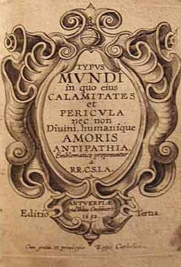
revu le 7 juin 2012
Introduction « Dans le Typus Mundi, édité au XVIIème siècle par les PP. de la Compagnie de Jésus, on voit un appareil, décrit encore par Tiphaine de Laroque, au moyen duquel on peut dérober le feu du Ciel et le fixer. Le procédé est on ne peut plus scientifique, et nous déclarons candidement que nous révélons ici sinon un grand mystère, du moins son application à la pratique philosophale. »
Voilà ce qu'écrivait Pierre Dujols de Valois, alias Magophon, dans son Hypotypose [cf. Mutus Liber]. Peut-être le libraire érudit faisait-il allusion à la planche XV du Typus. Quoi qu'il en soit, le Typus n'est pas un traité d'alchimie ; c'est un ouvrage de philosophie où voisinent des concepts assez flous, tenant de la Monade Hiéroglyphique de John Dee et des écrits plus hermétiques de Basile Valentin, de Bernard Le Trévisan et de Jean d'Espagnet. Deux personnages sont présents tout au long de ces trente-deux épisodes : le globe crucifère et l'ange, excepté à la planche I, qui fait référence à l'arbre solaire. Tour à tour, Cronos, la Justice, Typhon, Morpheus, Junon [par le biais du paon], le loup [sous l'espèce du rets en forme de filet], le petit roi de l'oeuvre, se verront appeler pour servir à chaque fois une parabole ou une énigme. Voici un extrait, en anglais, d'un site sur le poète William Blake qui en dira bien plus long que nous sur le Typus :
site consulté : http://webdoc.gwdg.de/edoc/ia/eese/artic22/hoeltgen/2_2002.htmlLe Typus Mundi représente donc des emblèmes à caractère religieux, dont l'hermétisme est ainsi plus ou moins voilé, l'idée directrice étant que « le monde est corrompu », doctrine qui a pour ainsi dire l'âge de l'humanité. On pourrait aussi dire que le Typus est une sorte de Divini et humani amoris antipathia. Nous trouvons d'autres renseignements sur le Typus dans un second site :William Blake and the Emblem Tradition Karl Josef Höltgen (Erlangen)
From Jesuit Emblems to Blake
It was J.B. Priestley who said that Blake was a "one-man religious revival". He was also a one-man revival of poetry, painting and the graphic arts, especially in the form of highly original symbolic word-image designs, his Illuminated Books. They appear to have some prima facie links with the emblem tradition. When we hear of an emblem today we probably first think of the badges of universities, company logos, and coats-of-arms, consisting of a motto and a symbolic picture. Such badges are survivors of a tradition of verbal and visual symbolism that was all-pervasive during the sixteenth and seventeenth centuries. The emblem is a mixed form that typically combines a motto, a symbolic picture and an epigram. An emblem was meant to convey knowledge and truth in a brief and compelling form that would persuade the reader and imprint itself on memory. Emblems, emblem books, and the emblematic mode of thought helped to shape virtually every form of verbal and visual communication in the Renaissance and Baroque Ages. Where is the bridge that takes us from the Renaissance emblem to William Blake working in London about 1800 ? In the eighteenth century, emblems were marginalized, but in the nineteenth century there was a real emblematic revival. Some years ago the present writer bought a rare book, Religious Emblems (London, 1809), with excellent wood engravings designed by the artist John Thurston and prose commentaries by the Rev. Joseph Thomas . It is one of the best artistic achievements of the revival. There is ample evidence that the "William Blake, Esq.", who appears in the List of Subscribers, is the poet-painter. Religious Emblems is the only direct and personal link between Blake and an emblem book that has come to light. It is modelled on the most popular and successful English emblem book, Francis Quarles's Emblemes, 1635, with nearly sixty editions up to the nineteenth century. Quarles established in Protestant England the Catholic emblems of the Amor divinus / Anima type. These books show the encounters of little Cupid figures representing Divine Love and the Soul. In these devotional emblem books, the tight structure of the earlier emblems is expanded by longer meditations. Two Jesuit works, Pia Desideria by Herman Hugo and Typus Mundi, served as models for the English poet.
site consulté : http://www.xrefer.com/entry/370155On trouve également d'autres traces sur le Typus, en consultant un site sur Andrew Marwell :Emblems
A book of short devotional poems by Quarles, first published 1635 and much reprinted; it was adapted from two Jesuit emblem books, Typus Mundi (1627) and Herman Hugo's Pia Desideria. The poems are in various metres, each based on some scriptural text, and some in the form of dialogues, e.g. between Eve and the Serpent, between Jesus and the Soul, and between the Flesh and the Spirit. The engravings are mostly by William Marshall (fl. 1630-50)."Andrew Marvell's Garden-Variety Debates"On voit que deux recueils sont cités comme congénères : le Typus et la Pia Desideria de Hermann Hugo. On peut en fait dresser la liste d'ouvrages de la même époque où amour et religion sont entrelacés :
Prepared for "Renaissance Dialogues and Debates"
University of Puget Sound, April 13-14, 2000[...] In addition to referring to Fairfax's real gardens, Marvell also makes extended use of literary gardens, the hortus conclusus in particular. Although not a Mannerist garden proper, the hortus conclusus of emblem books such as Henry Hawkins's Partheneia was likewise of a highly allegorical nature. Written in the style of an Ignatian meditation, Partheneia has the same threefold structure of application, analysis, and resolution of the will found in Continental Jesuit emblem books such as Hermann Hugo's Pia Desideria and the collection Typus Mundi. [...]
Curt Whitaker mailto:whitaker@ucla.edu
University of California, Los Angelessite consulté : http://emblems.let.uu.nl/tm1627.htmlOn remarquera que le Typus se présente comme un ouvrage anonyme... Un de plus dans toute la chaîne des ouvrages alchimiques ou hermétiques. Du fait de son caractère protéiforme [cf. planche II], il n'est pas possible de classer immédiatement le Typus dans notre bibliothèque alchimique. Du moins peut-il avoir une place de choix dans l'Idée alchimique, aux côtés du poème du phénix de Lactance, de la Monade Hiéroglyphique de John Dee ou des ouvrages de philosophie hermétique de Jean d'Espagnet ou de Bernard Le Trévisan. On pourrait y rattacher le commentaire de Bruno de Lansac sur la Lumière sortant par soy-même des Ténèbres. Et, enfin, le Bergbüchlein, ouvrage sur la génération des métaux et des minéraux.
- Vaenius, Amoris divini emblemata (1615)
- Montenay/Roemer Visscher, Emblemes ou devises chrestiennes (circa 1615)
- Cats, Sinne- en minnebeelden (1618)
- Typus mundi (1627)
- Van Leuven, Amoris divini et humani antipathia (1629)
- De Harduyn, Goddelyke wenschen verlicht met sinne-beelden (1629)
- Luyken, Jesus en de ziel (1678)
- Huygen, De beginselen van Gods koninkrijk, uitgedrukt in zinne-beelden (1689)
- Van Hoogstraten, Zegepraal der goddelyke liefde, vertoont [...] in zinne-beelden(1709)
- Suderman, De godlievende ziel vertoont in zinnebeelden (1724)Typus Mundi, c'est-à-dire figure ou image du monde, mais aussi phase du monde. Par tupoV, cela veut dire aussi marque imprimée ou empreinte. Nul doute qu'E. Canseliet, le disciple de Fulcanelli, n'ait inséré à escient la planche II dans ses Études de symbolisme alchimique [Pauvert, 1978] à cause de cet aspect protéiforme qui est bien le reflet de ces trente-deux planches où une qualité, une Vertu, une divinité, se trouvent citées à comparaître au tribunal du Monde.
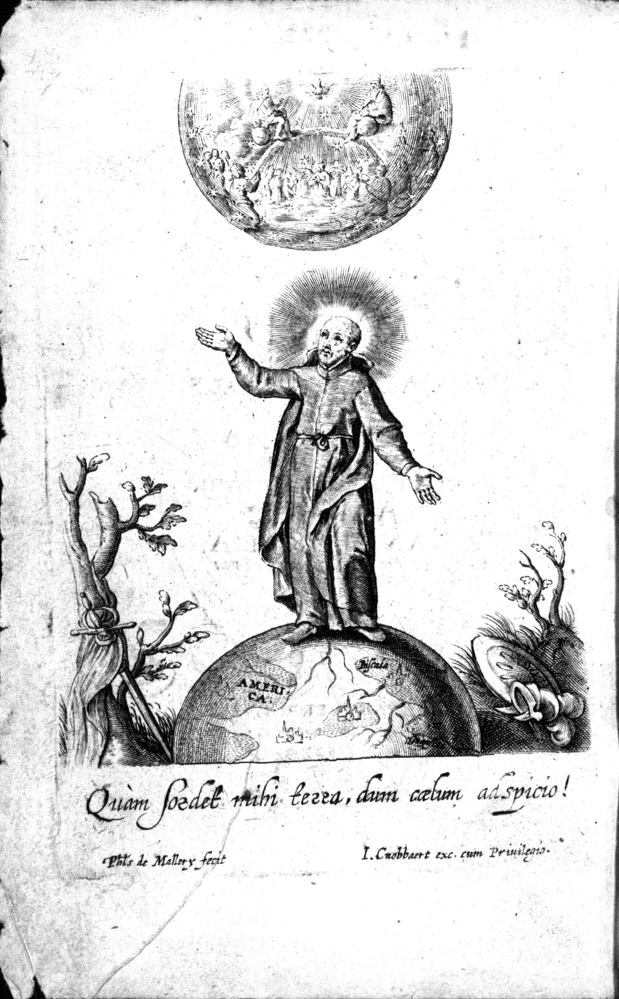
saint Ignace, dédicataire du Typus Mundi
Typvs mvndi in quo eius calamitates et pericvla nec non divini, humanique amoris antipathia proponuntur. Antverpiae: Apud vidua [sic] Cnobbaert, 1652
AV LECTEVR.
CE tant dedale & renommé ingenieur Archimede, a jadis faict voir à nos ançestres en vne sphere crystalline, parsemée des flamboyants rubis des estoilles, vn prodigieux racueil de la Celeste voute, au grand estonnement de Iuppiter & tous les Dieux: mais voicy à l'enuie d'Archimede dechifrée en vn petit pourtraict la demesurée immensité du monde; non pas embellie de tant d'estoilles & astres, mais parsemée de mille miseres & perils; & en oultre trauaillée par vne continuelle antipathie de deux Amours. I'espere que vous la contemplerez d'vne benigne œillade; & ferez accroistre ce merueille, monstrant que le Microcosme peut aisement comprendre ce Megalocosme.
PLANCHE I.L’ensemble du monde est établi dans le malin (dans l’arbre du malin).
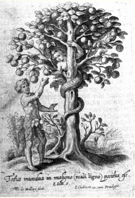
Sans l’aide d’Hercule1, Atlas2 porteur des astres,
Eût mis le ciel en pièce, les Dieux en mi[lle] désastre,
Et quoi ? Supportera du monde le grand poids
Un vermoulu pommier ?3 non, non, mais bien le choix4.1. sur Hercule, cf. Fontenay
2. sur Atlas, cf. 1, 2, 3, 4, 5 -
3. le pommier s'apparente à l'arbre solaire. Par ailleurs les mots pomme et mouton sont homonymes en grec : mhlon. [1, 2, 3, 4, 5] ; le malin prend les traits de la Mélusine, cf. Ripley Scrowle -
4. le choix du Soufre rouge parmi les sept possiblités de nature de l'arbre solaire [Arbore solari]
Ainsi la pomme unique a crû pour le malheur de tous.
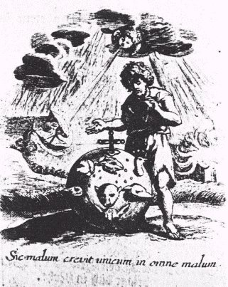
O cruel changement ! fière métamorphose !
La semence d’un fruit, quelle métempsycose !
Se change en carnassiers animaux, voire en maux,
Qui vont brisant le monde par mille et mille fléaux.55. Cette planche a été commentée dans la section Soufre.
Je souffre pour posséder. J’aurai souffert sans avoir posséder.
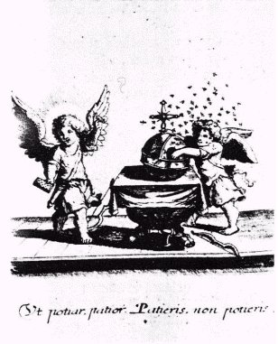
Gardez-vous follatreau, gardez-vous de ces ruches6,
Où ces petits archers7 vous ont mis des embûches,
Le rayon est ravi8, la proie est emportée :
Au lieu du doux nectar9 aurez la main maurée.6. sur les ruches, cf. 1, 2, 3, 4, 5.
7. les archers sont des anges qui dispensent la rosée de mai. Il peut s'agir aussi d'une indication sur Cupidon [1, 2, 3, 4, 5].
8. le rayon igné solaire, c'est-à-dire la teinture de la Pierre.
9. le doux nectar désigne l'ambroisie des dieux, analogue à l'élixir des alchimistes qui désigne le Compost canoniquement préparé.
Lequel est le plus léger ? auquel l’amour ajoute-il le plus de poids.
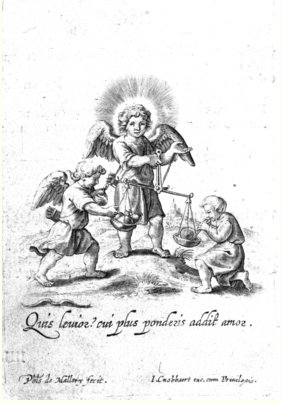
C’est vrai Monde léger, que le bouillon volage
Par l’océan de l’air s’envole, rame et nage
A la merci des vents, mais encore vous devance
Ce bouffi diamant, au poids de la balance.1010. Emblème de Thémis, la balance est aussi l'attribut de l'archange Gabriel qui tue le dragon Python. Il est ici question du fixe [à droite] et du volatil [à gauche]
Ils renversent le monde.
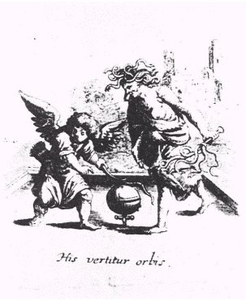
Mille tours, et retours joue la girouette,
Quand l’époux de l’été le doux Zéphir11 halète :
Ne t’étonne donc pas, que la sphère du monde
Battue de ces fouets12 vire de rond en ronde13.11. sur Zéphir, cf. 1, 2, 3, 4, 5.
12. ces fouets sont en fait des serpents ; le personnage de droite figure Typhon [Atalanta, XLIV].
13. le globe crucifère adopte ici la forme de Vénus. Est-ce Lucifer ou Hesperus ? Cf. humide radical métallique.
Dans la croix est la seule quiétude.
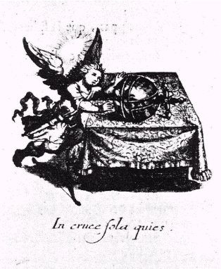
Tu travaille en vain, voulant cette boule,
Sur le pavé uni de la table ne roule :
Si tu veux cupidon voir ce globe rassis ;
Que le poids de la Croix ordonne son pourpris1414. L'idée est ici que l'on ne pourra enclore [pourpris = « enclos, jardin », terme du XIIe siècle] le globe qu'à condition de le prendre par la croix, c'est-à-dire de porter la matière au creuset. Sur Cupidon, cf. note 7.
L’ennemi se cache et tu te prélasses.
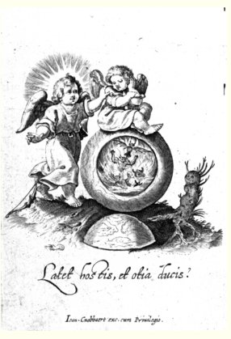
Holà ! éveille-toi ; que Morpheus le pipeur
Glissé dedans vos yeux ne te plonge en malheur.
Voyez que de bien près talonnait la ruine,
Le feu s’étant déjà fait maître de la mine.1515. Il semble qu'il s'agisse d'un avertissement sur le risque de brûler les fleurs, si l'on ne reste pas vigilant et prudent. Le globe ouvert par le milieu semble être une coupe du vaisseau de nature.
Elles détruisent l’un & l’autre par le rire.
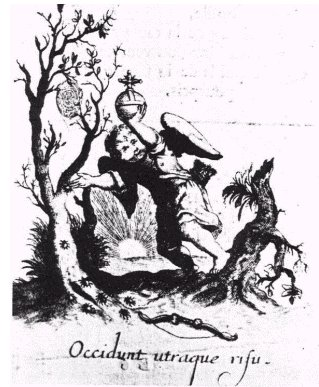
Doucement si la Tarentule vous a à fleur de peau
Doucement chatouillé par son fatal museau ;
Tu meurs en riant : tel est le faux plaisir
Du monde déloyal ; car son rire est mourir.1616. Il doit s'agir du « fou » de l'oeuvre, étiquette par laquelle on désigne d'habitude le Mercure. La morsure de la tarentule provoque une agitation psycho-motrice proche du délire d'Ajax.
C’est en vain dans ce monde qu’on se fixe à un rang social élevé.
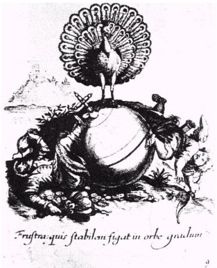
Gardez-vous de monter, écervelé Paon :
Ce Plute fracassé, ce culbutant garçon
Crient : fuyez du Monde l’inconstance,
Si tu ne veux courir risque de décadence.1717. L'image du paon est associée à la conjonction des Principes, cf. 1, 2, 3, 4, 5. Quant à Plute, il désigne Ploutos, dieu de la richesse, cf. humide radical métallique.
L’éboulement du monde m’augmente.
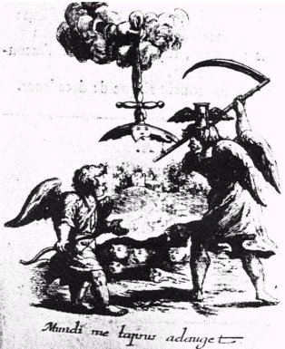
Si le glacé cristal auquel Vénus se farde,
Vient à glisser des mains d’un mignon de sa garde
Ou en voit dix ou douze pour une seule face :
La chute d’un vaut rien en mille lieux le place.1818. On voit ici le symbole de Saturne-Cronos, armé de sa faux, portant en chef un clepsydre ailé. Cette planche se rapproche de l'une du Livre d'Abraham Juif.
Jusqu’à ce qu’il ait rempli toute la terre.
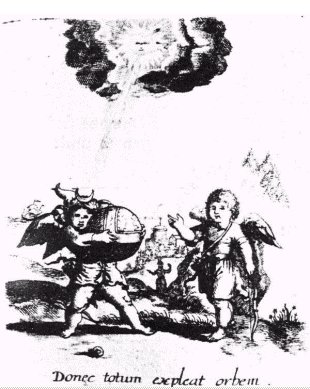
Aux dépend du Soleil la déesse bicorne
Ragrandit chaque nuit sa chevelure blonde :
De même Cupidon impatient de borne,
A tes dépends mortel, engage tout le monde.1919. Il s'agit d'une parabole sur Diane et Apollon. Quant au globe, il figure ici l'oeuf des philosophes [cf. Atalanta, VIII]
Celui-ci n’aime pas ; mais l’amour crochète.
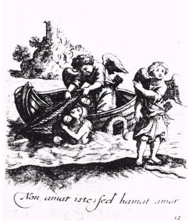
Veux-tu savoir pourquoi Cupidon porte flèche
A changé l’arc en rets, son vieux métier en pêche ?
Pour te conduire à mort : fuyez à toute force ;
La mort s’est déguisée du masque de l’amorce.2020. La planche montre la prise au filet des poissons gras et argentés qu'évoque Jean d'Espagnet dans son Oeuvre Secret d'Hermès. Le rets est l'image du loup hermétique.
Comment est pénible la servitude qu’engendre cette nourriture légère.
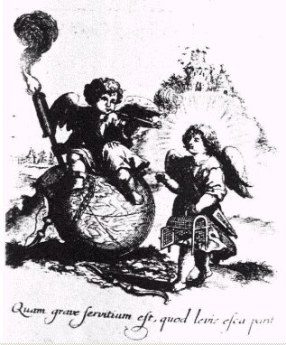
Ce musicien des bois pour un grain de pavot
Quitte sa liberté, change boscage en cage :
Mais hélas ! Cupidon, tu me sembles plus sot,
Pour un repas fumeux caressant l’esclavage.2121. Allégorie sur la capture du rayon igné solaire qui se rapporte au grain de pavot [cf. 1, 2, 3, 4, 5].
Tout ce qui brille en ce lieu n’est pas or.
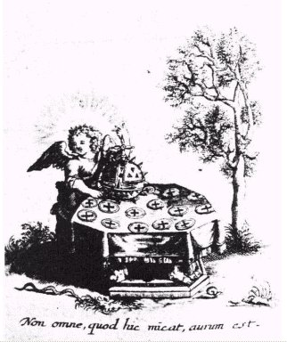
Ce voire pointu donna aux astres la bravade
De mille ducats faussez fait artiste parade :
Or quitte ce faux voire, et vois où tu te plonge,
Pour l’ombrage du bien, pour un doré mensonge.2222. Parabole sur la nature réelle de l'Or alchimique, cf. Chevreul, Histoire des Connaissances chimiques.
L’éclat jaillit des ténèbres et se meurt en elles
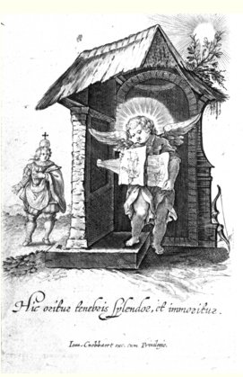
Ton lustre, ton éclat ne peut avoir durée.
Issu d’un brun néant, ténèbres et fumée :
Mais comme tout l’on voit évanouir en poudre,
En ce ténébreux rien, on le verra résoudre.2323. C'est la phase de dissolution qui est évoquée. Cf. Ripley qui est l'un de ceux qui en ont le mieux parlé. Voir aussi alchimie et héliographie. Cette image inversée est évoquée par E. Canseliet dans ses Études de symbolisme alchimique. Magophon y fait également allusion dans son Hypotypose, cf. supra et Mutus Liber. Au sens purement hermétique, nous voyons là une projection, cf. Aurora consurgens.
De cette manière le monde nous abuse.
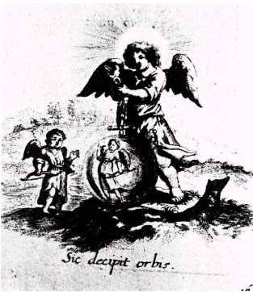
Ce petit Myrmidon en taille, et en posture
Paraît en ce cristal un relevé géant :
Voilà Monde tes arts, voilà ton imposture ;
Couvrir du cache-nez des grandeurs ton néant.2424. Allusion au basileuV de l'oeuvre, le petit roi qui végète dans le vase de nature [cf. 1, 2, 3, 4, 5]. Voir les planches du Mutus Liber.
Ainsi la terre convient mieux aux jeux.
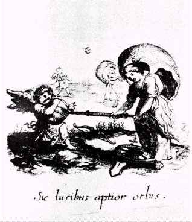
Tiens ferme Cupidon ; par l’haleine d’Eole
Ferai que ce ballon plus vite et plus haut vole :
Ecoutez arrogants : tes hautaines bouffées
Servent à ces bouffons jeux, et de risée.2525. Soumis aux vents, le Rebis s'accroît peu à peu, pourvu que l'Artiste ne hâte pas la feu [sur Eole, cf. 1, 2, 3, 4, 5]. Allusion à la sublimation philosophique.
Elle construit pour qu’il détruise.
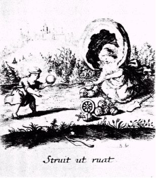
Si par un beau semblant Fortune te mignonne ,
Te caresse d’honneurs, et mille états te donne ;
Craignez (je la connais) elle tient pour délices
De voir ses favoris donner en précipices.2626. Identifiée avec la Tuch grecque, Fortuna, la déesse de la Chance aveugle et du Hasard, offre aux mortels, selon ses caprices, la richesse ou la pauvreté, la puissance ou la servitude. Voir Hypnerotomachie, I.
Il s’accordent mal.
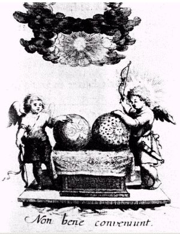
Ces deux Amours se font en tout du tout contraire,
Ils n’ont rien de commun, ils vivent en divorce :
Joignez de point en point ces boules en conforce,
Encore n’apointeras-tu rien de leurs affaires.2727. Il s'agit des deux principes de l'oeuvre, Gabricius et Beja, Diane et Apollon, repérés l'un par l'hiéroglyphe de l'écrevisse, l'autre par un lion. Nous avons l'image du sujet et de l'objet, cf. Orthelius pour une approche kantienne.
.
L’un conserve les bonnes choses l’autre les mauvaises.
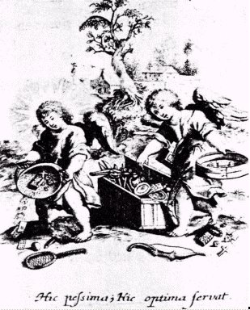
Que fais-tu Cupidon ? ce sont des bagatelles
Que tu recueilles ici, cervelle sans cervelle ;
Tu sembles au tamis ; Suivez le sage Amour,
Qui garde le meilleur pour s’en servir un jour.2828. Parabole sur le risque de jeter l'enfant avec l'eau du bain. Mêmes les lies paraissant les plus infectes ou sordides peuvent être d'intérêt dans l'oeuvre. Cf. lie de vin et Caput.
Ta fuite est vaine : la croix que tu fuis adhère à toi.
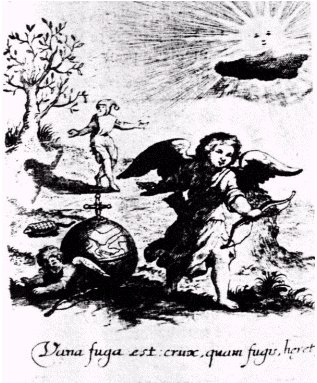
Ce limaçon collé à sa cabane ronde
Ne s’en peut dépêtrer : veux-tu porter le Monde ?
Bon-gré, mal-gré tu dois porter sa croix : c’est rage
De s’en vouloir défaire, c’est suivre son propre ombrage.2929. L'image du limaçon a été utilisée dans l'une des planches du De Lapide Philosophorum de Lambsprinck [cf. 1, 2, 3, 4, 5]. Cette image est d'habitue associée au vol de l'aigle.
Dans la croix demeure le sûr amour.
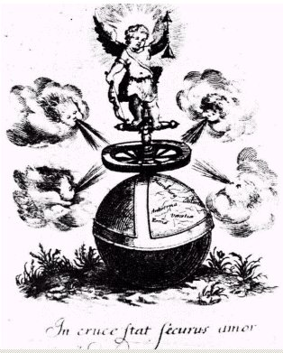
Plutôt ébranlerez, rasant rez pied rez terre,
Le sourcilleux sommet d’un rocher de la mer
Que ces petits garçons ; il rira vos tempêtes,
Si longtemps qu’il aura la Croix pour sa retraite.3030. C'est la grande coction qui est évoquée avec les quatre vents de l'oeuvre : les vents du Sud [Notus, Vulturnus], le vent du Nord [Borée] et le vent d'Est, humide [Zéphyre]. On trouve une image se rapprochant de celle du Typus dans le Livre d'Abraham Juif et dans l'Atalanta fugiens. Le globe crucifère représente le symbole du vaisseau de nature.
Tu te trompes : c’est par ce côté qu’on va vers elle.
Holà ! passez devant cette affreuse porte,
Car là ne ferez rien, ce sera chasse morte :
C’est le détroit pointu d’épine, et douleurs,
Qui fraye le chemin aux lauriers et honneurs.3131. On peut trouver une image de cette parabole dans le passage des roches cyanées, à la sortie du Pont-Euxin, là où Eurysthée lache une colombe qui permet aux Argonautes de sortir de la noirceur.
Celui qui jette le plus loin triomphe.
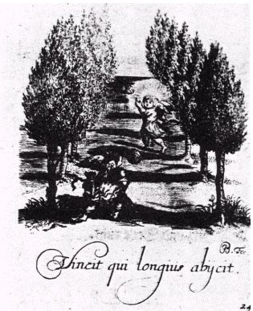
Jetez bien loin de toi c’est Oeuf Basilisque
Farci de mille morts, si tu ne veux courir risque ;
Jetez dis-je de toi cette mondaine boule,
Celui gagne le jeux qui plus avant la roule.3232. Y a-t-il un rapport avec les trois pommes d'or qu'Hippoménès jette devant lui, contraignant ainsi Atalante à sa perte, en la fixant ? Et n'y peut-on pas voir une allégorie sur l'intérêt qu'il y a à laisser dans un état de longue fluidité le Mercure ? Voir Mercure philosophique.
Les cymbales donnent par l’une des musiques de l’ardeur aux enfants, par l’autre aux hommes.
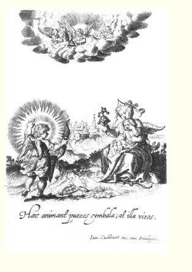
Le Monde enclocheté rapaise Cupidon,
Un fallâtre cymbal un follâtre garçon ;
Mais les hommes de bien sentent l’âme ravie
Par les divins fredons de céleste harmonie.3333. Les alchimistes se sont plu à dire que l'Art sacré est du même ordre que celui de la musique. Que de trompettes, de buccins, de luths ne voyons-nous pas dans les vieilles planches et gravures. Cf. Atalanta fugiens pour les correspondances entre les notes de la gamme, les planètes et les couleurs. Voyez encore les trompettes du Mutus Liber.
D’un côté elle triomphe, de l’autre elle perd.
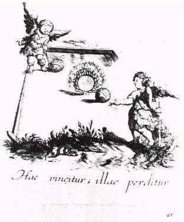
D’un très étroit lieu Daphné s’est mariée
Avec le Dieu Vulcain, le mépris et la gloire :
Holà donc ! gardez-vous de faire par là l’entrée,
Ou tu seras frustré du prix de la Victoire.3434. On connaît la fable de Daphné et du laurier [cf. 1, 2, 3, 4, 5]. Fille du dieu-fleuve thessalien Pénée et nymphe prêtresse de Gaïa, Daphné (« laurier ») fut poursuivie par les assiduités d'Apollon qui, au moment de la saisir, la vit se transformer en laurier. Avec les feuilles de cet arbre, qui, par la suite, lui fut consacré, le dieu tressa une couronne. On
racontait également une autre légende : Daphné s'était éprise d'un jeune homme, Leucippos, qui, pour l'approcher, s'était déguise en femme. Apollon, jaloux, donna à Daphné et à ses compagnes l'idée de se dévêtir et de se baigner. Le malheureux fut lui aussi obligé de faire de même, les nymphes, découvrant la supercherie, se préparaient à le tuer lorsque les dieux le ravirent à leur vue. Daphné, dans sa confusion, fut sur le point d'être étreinte par Apollon, mais elle put, au dernier moment, se changer en laurier qui devint, à ce jour, l'arbre préféré du dieu.
Je redoute la lumière du jour à venir.
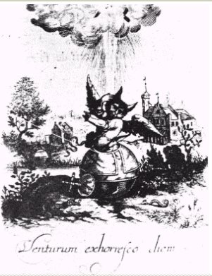
Le Hibou et le mondain, et la rate-penade,
Nourrisson de la nuit, le jour ont en horreur ;
Ils craignent que Titan par sa dorée oeillade,
Découvrirait aux cieux leur infâme laideur.3535. sur le hibou, cf. 1, 2, 3, 4, 5. Le mondain désigne une sorte de pigeon mais il est plus vraisemblable que le mondain, dans le cas présent, désigne la personne de peu d'esprit. Quant à la rate-penade, elle doit désigner notre taupe. Ces animaux semblent ne pas apprécier la lumière solaire. Fulcanelli a désigné, dans son Mystère des Cathédrales, un tableau de pierre où l'on voit un chevalier protéger son athanor des rayons ignés. De même, dans l'un des caissons de la galerie hermétique du château de Dampierre-sur-Boutonne voit-on une scène où les rayons solaires semblent avoir un effet particulièrement puissant. Rappelons que l'on ne saurait évoquer le hibou sans parler de la chouette [1, 2, 3, 4, 5].
Addendum du 5 août 2003 : depuis que ces lignes ont été écrites, des précisions m'ont été apportées sur la rate-penade par M. Luc Alberto. Les voici :
« vous mentionnez la rate-penade en tant que taupe, dans le midi il semblerait que ce soit le terme pour désigner une chauve-souris, plus communément appelée pipistrelle, (pipistrelus-pipestrelus), cela demanderait confirmation bien sûr, mais plus en adéquation avec le hibou et les ténèbres. »
Après les ténèbres j’espère la lumière.
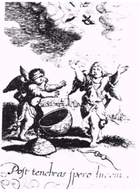
Ce divin Cupidon, tout embrassé d’amour
Décoche mille soupirs après ce beau séjour ;
Mais celui-là de peur tremblote, et hérissonne,
Pendant qu’en tout moment au Jugement l’on sonne.3636. Parabole sur la renaissance après la période de dissolution. Le globe est ouvert. Cf. l'Atalanta XLIX sur Orion aveugle, recouvrant la vue après avoir exposé ses yeux au soleil de l'Orient.
Il tinte : il est vide.
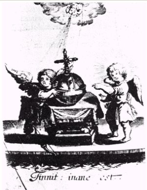
Qu’est ceci Cupidon ? aussitôt que tu sonnes,
Le monde retintant d’un petit ton fredonne :
Oyez ceci Mondain : c’est que le Monde est vide ;
Car jamais ne tintait chose du tout solide.3737. Est-ce un avertissement sur la vanité de toute chose ? Il est clair, en effet, que si le Typus présente des caractères évidemment hermétiques, c'est un message philosophique sur la vanité du monde, qu'il entend donner. Autrement dit sur le sens du jugement.
Ici Dieu est toute chose en toute choses, et rien n’est vide.
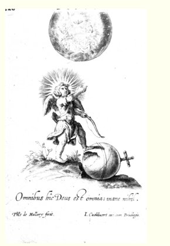
Le Monde est vide et vain sans substance et moelle,
Son rien, sa fleur vapeur, ses perles gresse :
Foulez-le donc aux pieds, caressez la Cité,
Où Dieu est tout en tout par son immensité.3838. C'est, en tout cas, ce que laisse entendre le commentaire de la planche XXX. Voyez là-dessus la section St Grégoire-sur-Vièvre.
La terre en sortira plus uniforme.
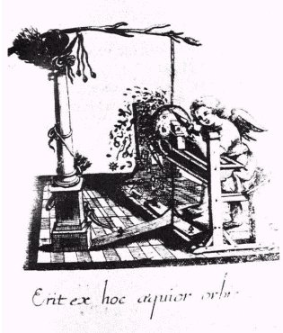
Raclez Amour Divin toutes ces influences
Ces carcans, ces miroirs, ces sceptres, ces embûches,
Ces pièges des mortels, afin que le faux monde
Ne vienne à entraîner aux enfers tant de monde.3939. Là encore, parabole où l'on ne voit pas un intérêt alchimique absolument évident. Il s'agit de conseils sur la Vertu.
Il s’ouvre au ciel et se ferme à la terre.
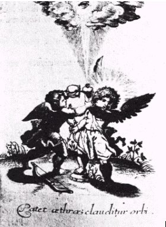
Poussez tant qu’il vous plaît, ce coeur fait à l’épreuve
Ne peut être percé, par ce qu’ici se trouve :
Mais si ce grand Tireur vient darder ses flèches,
En moins de rien verras, qu’il aura fait la brèche.4040. Tandis qu'ici, le discours prend un aspect presque maçonnique. On relève toutefois que le coeur, en alchimie, désigne l'Âme, c'est-à-dire le Soufre dissous dans le Mercure. C'est le signe de la prochaine réincrudation du Soufre.